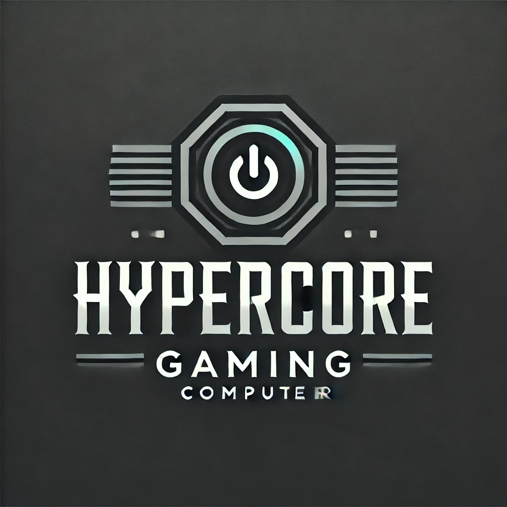

Quiz sobre Hardware e Software

Home
Produtos
Contato
Quiz
1. Em termos de tipologia temos basicamente dois tipos de memórias: a primária e a secundária. Identifique a alternativa que apresenta corretamente uma memória do tipo primária:
A) Pen Drive
B) Modem
C) RAM
D) HD
2. São dispositivos de armazenamento externos e removíveis, exceto:
A) CPU
B) SSD
C) HD
D) Pen Drive
3. é um componente do computador que gera imagens na tela, como vídeos, jogos, fotos, desenhos e páginas da internet. Qual seu nome?
A) Mousepad
B) Hd
C) Processador
D) Placa de Vídeo
4. Qual cabo transmite a imagem do pc para o monitor?
A) Aux
B) HDMI
C) Usb
D) Fibra óptica
5. Qual dos seguintes itens NÃO é considerado hardware de computador??
A) USB
B) Vácuo
C) Mouse
D) Teclado
6. Quem é o hardware responsável por processar os dados de entrada e transforma-los em dados de saída?
A) A placa- mãe
B) O HD
C) A memória RAM
D) O processador
7. Qual alternativa apresenta apenas componentes externos de um computador?
A) Impressora, placa-mãe, placa de vídeo.
B) Caixa de som, teclado, mouse, impressora.
C) Processador, teclado, monitor, fonte
D) Linux, Mac OS, dvd.
8. Quem distribui a energia elétrica para todo computador?
A) Fonte
B) Placa Mãe
C) Estabilizador
D) Processador
9. Qual dos componentes relacionados NÃO é considerado um periférico, em informática?
A) Microprocessador.
B) Mouse.
C) Teclado.
D) WebCam.
10. Existem vários tipos de licença de software. O tipo de licença em que assim como os softwares livres, eles podem ser usados por qualquer um, no entanto, não podem ser modificados ou redistribuídos é a licença do tipo:
A) Semi-livre.
B) Wild Hunt
C) Copyleft.
D) Freeware.
Enviar Resposta
Responder Novamente